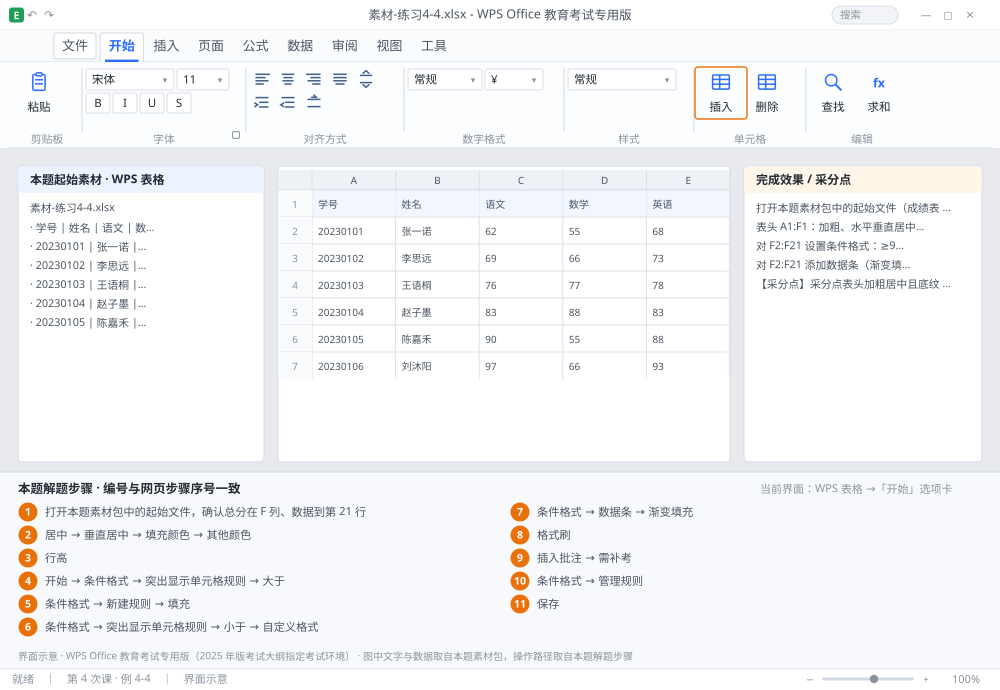

完成比对文档 · 例 4-4
条件格式：三色分级 + 数据条 + 表头格式刷 + 批注 ｜ 第 4 次课 / WPS 表格 ｜ 网页：实操-表格1.html ｜ 考试环境：WPS Office 教育考试专用版（2025 年版考试大纲指定考试环境）
用途 本页按修订后的题目要求与解题步骤生成，是交卷自查的结果基准：
逐项列出每一步应出现的可复核结果，配合模拟操作截图与解题结果文件使用。
它不是素材包的一部分，不会预置答案动作；起始素材仍从本题素材包下载。
一、本题起始素材包
目录：练习素材/练习4-4-条件格式与批注/ ｜
下载包：练习素材/下载/练习4-4-条件格式与批注.zip
二、题目要求
- 打开本题素材包中的起始文件（成绩表 A1:F21，F 列为总分）。
- 表头 A1:F1：加粗、水平垂直居中、底纹 RGB(217,226,243)、行高 28。
- 对 F2:F21 设置条件格式：≥90 绿色填充；60~89 黄色填充；<60 红色加粗字体。
- 对 F2:F21 添加数据条（渐变填充）。
- 用格式刷把表头格式复制到 H1:M1。
- 在第一个不及格的单元格（F 列）上添加批注「需补考」。
- 保存为 学号-姓名-练习4-4.xlsx。
三、解题步骤（编号与下方核对表、截图编号一致）
- 打开本题素材包中的起始文件，确认总分在 F 列、数据到第 21 行。
- 设表头格式。选中 A1:F1 → Ctrl+B 加粗 → 开始选项卡「居中」+「垂直居中」→「填充颜色」→「其他颜色」→「自定义」→ 输入 R 217、G 226、B 243 → 确定。
- 设表头行高。选中第 1 行行号 → 右键 →「行高」→ 28。
- 条件格式①≥90。选中 F2:F21 →「开始」→「条件格式」→「突出显示单元格规则」→「大于」→ 输入 90 → 格式选「绿填充色深绿色文本」→ 确定。
- 条件格式②60~89。「条件格式」→「新建规则」→「只为包含以下内容的单元格设置格式」→ 条件设为「单元格值 介于 60 和 89」→ 格式 →「填充」选黄色 → 确定。顺序很重要：先设 ≥90，再设 60~89，最后设 <60，否则区间会互相覆盖。
- 条件格式③<60。「条件格式」→「突出显示单元格规则」→「小于」→ 60 → 格式选「自定义格式」→ 字体设为红色、加粗 → 确定。
- 加数据条。选中 F2:F21 →「条件格式」→「数据条」→「渐变填充」→ 选一种颜色。数据条会按数值大小自动伸缩。
- 用格式刷。选中 A1:F1 → 双击「格式刷」（双击可连续使用）→ 拖过 H1:M1 → 按 Esc 结束。
- 加批注。找到第一个总分小于 60 的单元格 → 右键 →「插入批注」→ 输入「需补考」→ 点空白处。单元格右上角出现红色小三角。
- 检查三条规则。「条件格式」→「管理规则」→ 应能看到 3 条规则，且应用区域都是 $F$2:$F$21。
- 保存。Ctrl+S。
四、完成效果 / 采分点
采分点表头加粗居中且底纹 RGB(217,226,243)、行高 28 · ≥90 绿色填充 · 60~89 黄色填充 · <60 红色加粗 · 数据条已添加（渐变） · 格式刷已复制到 H1:M1 · 不及格单元格有「需补考」批注
五、逐项完成核对表
| 步骤 | 关键操作路径 | 应出现的结果（可复核） |
|---|
| 1 | 打开本题素材包中的起始文件，确认总分在 F 列、数据到第 21 行 | 21 行 |
| 2 | 设表头格式 | A1:F1、「居中」、「垂直居中」、「填充颜色」、「其他颜色」 |
| 3 | 设表头行高 | 1 行、「行高」 |
| 4 | 条件格式①≥90 | F2:F21、「开始」、「条件格式」、「突出显示单元格规则」、「大于」 |
| 5 | 条件格式②60~89 | 「条件格式」、「新建规则」、「填充」 |
| 6 | 条件格式③<60 | 「条件格式」、「突出显示单元格规则」、「小于」、「自定义格式」 |
| 7 | 加数据条 | F2:F21、「条件格式」、「数据条」、「渐变填充」 |
| 8 | 用格式刷 | A1:F1、「格式刷」、H1:M1 |
| 9 | 加批注 | 「插入批注」、「需补考」 |
| 10 | 检查三条规则 | 「条件格式」、「管理规则」 |
| 11 | 保存 | 保存 |
六、模拟操作截图

界面示意 · WPS Office 教育考试专用版 · 橙色编号与本题解题步骤序号一致；
图中文字与数据取自本题素材包，功能入口取自本题解题步骤。
核对方法：按网页解题步骤完成并另存自己的成稿后，逐行比对本表第 3 列的
参数、公式、区域、文件名与对象数量；再对照网页「完成效果 / 采分点」检查版式是否一致。